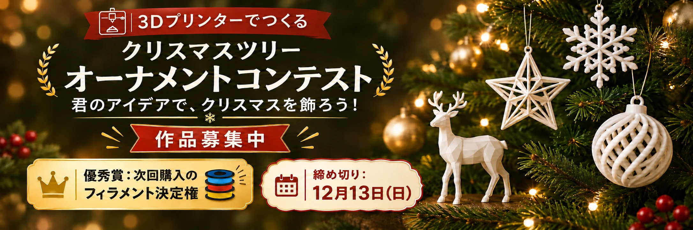

3Dプリンターでつくる クリスマスツリー オーナメントコンテスト 君のアイデアで、クリスマスを飾ろう！
作品募集中
優秀賞：次回購入フィラメント決定権
締め切り：

立体的な形や格子構造など、3Dプリンターならではの工夫も歓迎します。
内容は予告なく変更となる場合があります。
気になる作品を選ぶと、写真や3Dモデルを見られます。
作品を開くと、ログインなしでリアクションできます。
条件に合う作品がありません。検索語を変えてお試しください。
実物の写真と3Dモデルを添えて、
あなたのアイデアを紹介してみませんか。
投稿した内容とファイルは、この端末のこのブラウザーにのみ保存されます。ブラウザーのデータを消すと投稿も消えます。本名・個人情報や、権利のない画像・モデルは投稿しないでください。